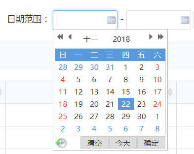

日期组件默认使用的是My97DatePicker（点击查看官网API）， My97DatePicker是一款非常灵活好用的日期控件，它可以很方便地实现各种日期选择效果，博得广大IT开发人员的青睐。
My97DatePicker需要引用以下文件：
使用时只需在元素上添加事件即可：
-
日期组件默认风格，如下图所示：
如需修改配置信息，只需WdatePicker({dateFmt:'yyyy-MM-dd',readOnly:true,maxDate:'#F{$dp.$D(\'edate\')}'})" 加上相关配置信息即可。
配置信息主要在onfocus="WdatePicker({dateFmt:'yyyy-MM-dd',readOnly:true})" 的WdatePicker 方法的 { } 对象中定义。 常用的配置信息在 WdatePicker.js 文件中定义了：
var $dp,WdatePicker;(function(){var _={
$wdate:true,
$dpPath:"",
$crossFrame:true,
doubleCalendar:false, //是否双月日历
autoUpdateOnChanged:false,
position:{}, //位置如：position:{left:100,top:50}
lang:"auto",
skin:"default", //皮肤
dateFmt:"yyyy-MM-dd", //日期格式
realDateFmt:"yyyy-MM-dd",
realTimeFmt:"HH:mm:ss",
realFullFmt:"%Date %Time",
minDate:"1900-01-01 00:00:00", //最小日期
maxDate:"2099-12-31 23:59:59", //最大日期
startDate:"", //起始日期
alwaysUseStartDate:false, //当日期框无论是何值,始终使用 startDate 做为起始日期
yearOffset:1911,
firstDayOfWeek:0, //自定义星期的第一天
isShowWeek:false, //是否显示周
highLineWeekDay:true, //高亮周日
isShowClear:true, //是否显示清空
isShowToday:true, //是否显示今天
isShowOK:true, //是否显示OK
isShowOthers:true,
readOnly:false, //是否只读
qsEnabled:true,
errDealMode:0, //自动纠错功能
//0 在输入错误日期时,会先提示
//1 在输入错误日期时,自动恢复前一次正确的值
//2 在输入错误日期时,不做提示和更改,只是做一个标记,但此时日期框不会马上隐藏
autoPickDate:null, //点两次才能选择日期的原因
//为false时 点日期的时候不自动输入,而是要通过确定才能输入
//为true时 即点击日期即可返回日期值
//为null时(推荐使用) 如果有时间置为false 否则置为true
specialDates:null, //特殊日期
specialDays:null, //特殊天
disabledDates:null, //无效日期 如：disabledDates:['5$']
disabledDays:null, //无效天 如：disabledDays:[6]
opposite:false, //有效日期
更多更详细的API 建议大家去官网阅读，这里就不再搬运了， http://my97.net/demo/index.htm